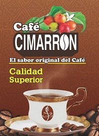
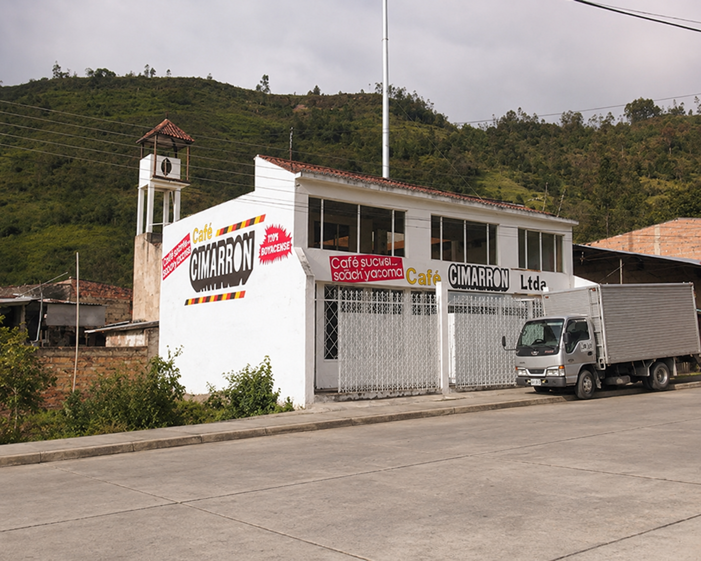
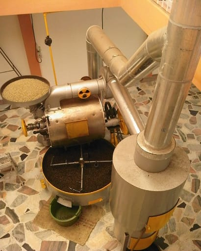
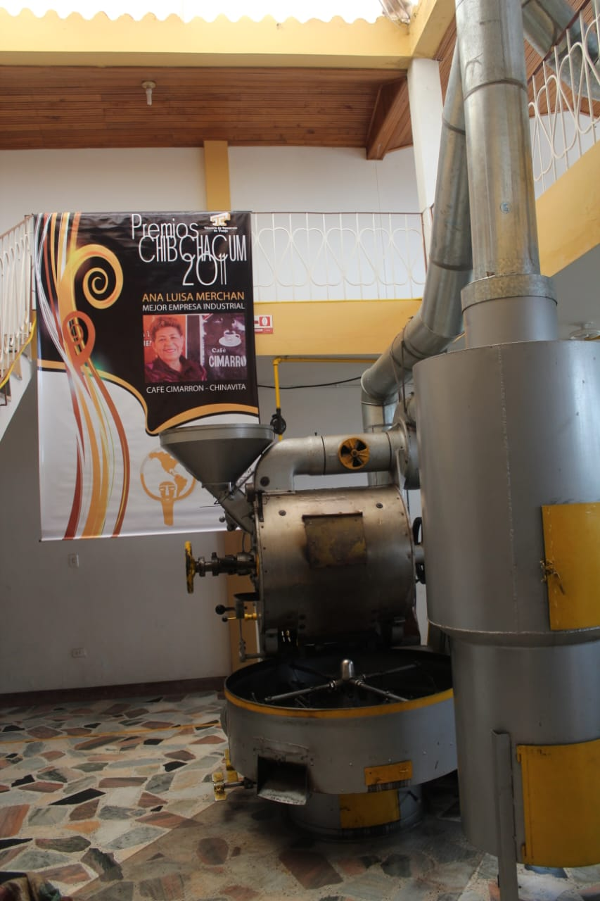
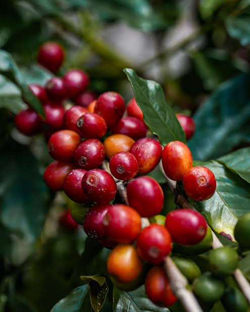
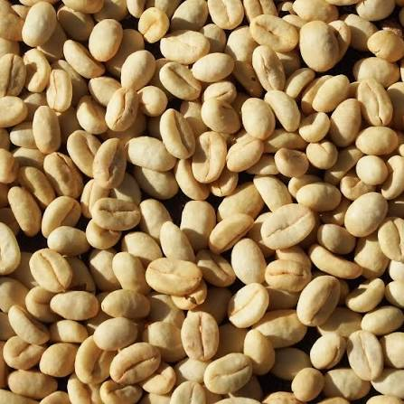
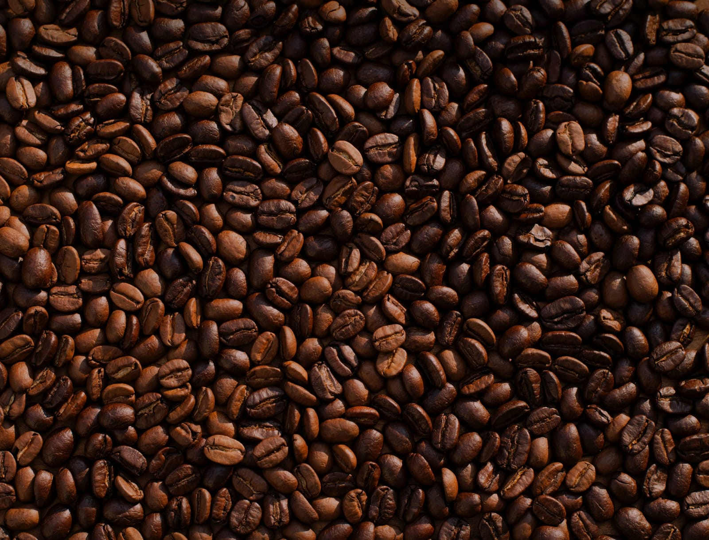
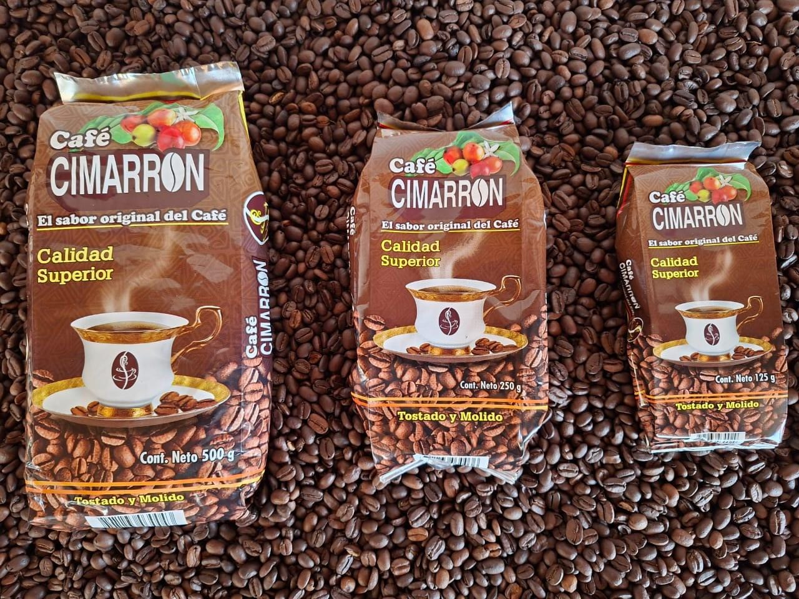

EL SABOR DE NUESTRA TIERRA
Descubre el aroma, la tradición y el sabor de Café Cimarrón.
Conoce nuestros productos



Café Cimarrón es una empresa torrefactora dedicada al procesamiento de café puro COLOMBIANO desde 1972. Está ubicada en el municipio de Chinavita, Boyacá, en la región del Valle de Tenza.
Somos una empresa que conserva la tradición de seleccionar cuidadosamente su café, ya que con mas de 35 años de experiencia logramos darle un punto especial en su Tostión y Molienda.
Seleccionamos lo MEJOR de nuestra cosecha con el fin de darle un toque UNICO y ESPECIAL en tostión y molienda, para que nuestros consumidores disfruten de un CAFE PURO 100% COLOMBIANO, con cuerpo, sabor y aroma.

Se seleccionan cuidadosamente los frutos maduros para obtener un café de calidad.

Los granos pasan por un proceso de secado para prepararlos para su transformación.

El café adquiere su aroma, color y sabor característicos mediante la tostión.
Disfruta el auténtico sabor del café puro colombiano. Encuentra la presentación ideal para ti.

Presentación de 500 gramos
Presentación de 250 gramos
Presentación de 125 gramos
Para disfrutar el café en grano
Estamos para atenderte. Comunícate con nosotros y disfruta el auténtico sabor del café colombiano.
Calle 7 # 1B 46
Chinavita, Boyacá
Región del Valle de Tenza, Colombia